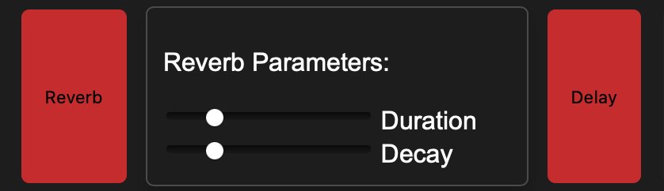

PicTune is a web tool imagined and designed to help non-musicians experiment with sound. Coming with an accessible and ready-to-use interface, PicTune allows anyone to play with their recordings at their very own pace.
In the middle of the interface there's a window that provides a graphical response to the input recorded from the user. This fusion between visuals and sound (pics and tunes) is the idea that inspired us to build this web app.
Pictune is a playground in wich you can have fun with four differents built-in effects to apply to your recordings. Experiment to your heart content, turn them on/off, mix them as you like!
If you have a bit of experience with these effects you can also choose to manipulate their settings changing their default parameters to better match you musical intentions.
You can choose between either using an audio recording device, may it be your laptop integrated microphone or external ones,
or using a jacked in instrument to play in MIDI.
It's up to you and to your unique style!
You can keep playing with the sounds you created with us wherever you want! Just click con the export button to download your
recording with the effects you selected and use them as you want in your DAWs and projects!
Have fun with PicTune!